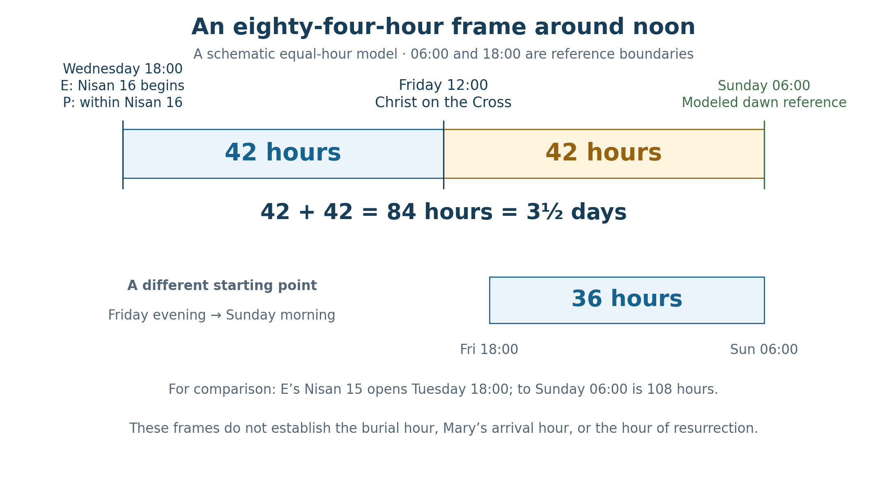
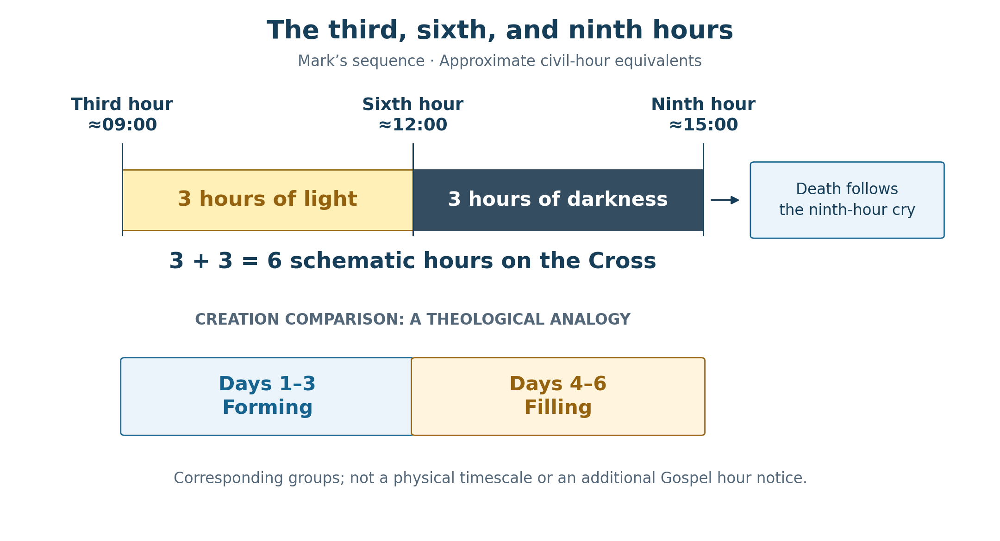

Book 1 · The Cross at the Center of Time · Chapter 10 of 18
Four representations gathered around Christ on the Cross
“Early on the first day of the week, while it was still dark, Mary Magdalene went to the tomb”
— John 20:1
Mary finds the stone already removed. John brings us to the first day through darkness and discovery: the Lord has acted before she understands what has happened. The exact instant of His rising remains beyond the account's clock notices. The empty tomb gives her, and us, a place from which to look backward toward the Cross.1
The journey through Bethany has prepared us for this moment. Lazarus' restored life drew the opposition toward a death sentence against Jesus. Mary of Bethany anointed the One approaching His burial. Now the body-Temple of which Jesus spoke has passed through death, and its promised raising has become the reality the disciples must learn to recognize.
I want to set four calendar representations beside that movement: the two lunar reckonings, the evening-start solar reckoning, and the morning overlay explained below. The comparison will retain the supper and sacrifice, the night and morning, the noon darkness and the empty tomb. Each row of the chart has a declared starting point. Those visible relationships lead me toward the larger possibility that time receives its redeemed order from Christ’s completed work.
In this chapter
- What the Gospels place before us
- The meal and the sacrifice
- The solar date and the chosen morning phase
- Four representations of the same events
- A half-week across the rows
- Forty-two hours on either side of noon
- Six hours and the work of creation
- Six days toward Passover
- Forty appearance days and forty-two counted dates
- The center toward which the measures point
- Sources and notes
What the Gospels place before us
John identifies Mary's visit with the first day of the week and says it is still dark. Mark describes the women's arrival just after sunrise. These notices should retain their own wording and setting. The Gospels do not jointly supply one observed instant at which every visitor or calendar witnessed the Resurrection. Their testimony brings us to the tomb after Christ has risen.2
For the figures below I use 06:00 for dawn and 18:00 for evening. These are equal-hour model boundaries. They are useful for displaying twelve-hour shifts and complete days; they are not an astronomical calculation of Jerusalem's sunrise or sunset, or a recovered clock time for Mary's visit. The Sunday dawn line will therefore be labeled as a model boundary throughout.
The ordinary historical sequence remains fixed within the book's preferred AD 33 framework: the supper precedes the Friday Crucifixion; burial precedes the Sabbath; the first-day discovery finds the tomb empty. Friday is Julian April 3, and Sunday is April 5. AD 30 retains the alternative role already described. The model examines the chosen AD 33 relationship rather than reopening the received chronology at every step.3
That sequence gives the comparisons their common events. Different numbered dates can contain the same Friday noon or the same part of the following night. The events do not have to move for their calendar descriptions to differ.
The meal and the sacrifice
The first two rows retain the proposal developed in Chapter 4. In the later lunar reckoning associated here with John's presentation of the authorities, Friday daylight is Nisan 14. In the earlier lunar reckoning associated with the Synoptic supper, it is Nisan 15. Both rows use evening boundaries, but their month beginnings stand one day apart.
The earlier row lets the supper be Passover in the disciples' reckoning. The later row lets Friday retain the preparation and sacrificial setting central to the book's reading of John. I continue to associate these perspectives provisionally with Galilean and Pharisaic traditions on one side and Judean Temple leadership and Sadducean authority on the other. These are proposed historical associations, rather than universal calendar rules established for every member of those groups.4
The underlying administrative questions remain as stated earlier. The cited astronomy has not established the earlier March 19 evening crescent, and the arrangements for an earlier sacrifice relative to the Temple schedule remain unresolved. The two rows show the date relationship required by the proposal. They do not recover a proclamation or a priestly decision absent from the sources.
Their theological contributions remain substantial. The meal presents Christ giving the covenant gift to His disciples. The sacrifice presents the Lamb delivered to death. I believe the Gospel presentations belong together, and I follow their gathering without making the calendar model explain an unrecorded hour of slaughter or resolve every difference in the hour notices.
John's about-sixth-hour notice belongs to the proceedings before Pilate. Mark places Jesus on the Cross at the third hour. Moving the beginning of Nisan by a day does not by itself resolve that difference in their hour notices. The noon marker in our diagrams will locate Christ already on the Cross, where Mark places the beginning of darkness.5
The solar date and the chosen morning phase
The regular 364-day calendar gives us a fixed weekly form. With the year beginning on Wednesday, Nisan 14 falls on Tuesday and Nisan 15 on Wednesday. Under an evening boundary, the Wednesday date begins on Tuesday evening. Under the ordinary Wednesday-morning reference, it begins on Wednesday at dawn.
The inherited four-row chart adds a particular morning pairing. Its morning period begins twelve hours before the evening beginning of the same numbered date. Its weekday is named by the dawn at which that period ends. Thus its period named Wednesday begins on Tuesday morning and ends on Wednesday morning. Its period named Sunday begins on Saturday morning and ends on Sunday morning.6
I retain this arrangement as a phased morning overlay. It is a proposed prophetic representation with its own declared position. It is distinct from the canonical Wednesday-morning reference. Changing a boundary and changing which physical morning carries the date are separate operations; the comparison needs both to remain visible.
Table 1 — Three solar arrangements kept distinct
| Arrangement | Period assigned Nisan 15 | Date just before the modeled Sunday dawn |
|---|---|---|
| Evening-start solar row | Tuesday 18:00 to Wednesday 18:00 | 19 |
| Standard morning reference | Wednesday 06:00 to Thursday 06:00 | 18 |
| Phased morning overlay used in the four-row figure | Tuesday 06:00 to Wednesday 06:00 | 19 |
In the clock labels below, weekdays follow the common civil axis. Thus Wednesday 18:00 is the close of solar Wednesday, Nisan 15, and the beginning of solar Thursday, Nisan 16. The civil clock label and the solar weekday therefore describe the same moment from different daily beginnings.
The middle row preserves Wednesday morning as its starting reference. The last row preserves the inherited chart's same-night pairing and ending-weekday names. A historical community's use of that last convention is not established by the chart. Calling it an overlay allows its proposed contribution to be examined without silently replacing the canonical anchor.7
The distinction also clarifies the names Essene, Qumran, and Enochic. The 364-day calendar has substantial textual evidence, while particular daily boundaries and community practices need their own sources. Sunrise prayer is not automatically a rule for changing a legal date at dawn. These historical questions remain distinct from the declared numerical arrangement we can draw and test.
Four representations of the same events
The four-row comparison now has a definite form. Its two lunar rows preserve the one-day difference in the month beginning. Its evening solar row preserves Wednesday daylight as Nisan 15. Its phased morning row begins the same numbered date twelve hours before the evening row and names the period by its ending dawn.
Table 2 — The date labels at common reference points
| Representation | Friday noon | Just before Sunday 06:00 | At Sunday 06:00 |
|---|---|---|---|
| Later lunar row, John's presentation | 14 | 16 | 16 |
| Earlier lunar row, Synoptic presentation | 15 | 17 | 17 |
| Evening-start solar row | 17 | 19 | 19 |
| Phased morning overlay | 18 | 19 | 20 begins |
The boundary in the final cell matters. The overlay's Nisan 19 ends at the modeled Sunday dawn, and Nisan 20 then begins. A visit before that boundary falls within its Nisan 19; the boundary itself belongs to the new date. The standard morning reference would instead have Nisan 18 before dawn and begin Nisan 19 there.8

In the third row, Wednesday evening closes Wednesday, Nisan 15, and opens Thursday, Nisan 16. The fourth row uses the ending-weekday convention described above; the chart marks the Sunday-morning boundary as the end of Day 19 and start of Day 20. Its “Noon Crucifixion” label locates Christ on the Cross at the onset of darkness. Its “Resurrection” line serves here as the modeled dawn reference; the Gospel does not report the instant of rising.
Rome contributes the midnight civil boundary and the familiar weekday axis used to locate the comparison. The four rows here are four representations within the inquiry, rather than a claim that four independently documented ancient calendars followed precisely these settings.
Consider the hours after civil midnight and before the modeled Sunday dawn. The evening reckoning and the Roman civil reckoning are already within Sunday. The chosen morning overlay is finishing the period it names Sunday, because that period takes its name from the dawn at which it ends. The standard morning reference is still within the preceding day. The selected rows can therefore share a Sunday label during these hours because of the overlay’s stated naming convention; John’s first-day testimony does not require every ancient calendar to have used it.
I see meaning in that gathering. The same victory can be approached through a day already entered and a day drawing toward its closing dawn. Their differing positions become part of the witness I seek, rather than details to be concealed in order to make the clocks agree.
A half-week across the rows
The vertical relationship becomes clearer when we include the progress through each date. A date number by itself gives an ordinal label. Adding the fraction of the date already completed gives a continuous coordinate for the model.
At Friday noon, an evening date that began at 18:00 on Thursday has run for eighteen hours, or three quarters of a day. A morning period that began at 06:00 on Friday has run for six hours, or one quarter. We can therefore express the common noon as follows:
Table 3 — Date coordinates for one modeled Friday noon
| Representation | Date plus completed fraction | Change from the preceding row |
|---|---|---|
| Later lunar | 14¾ | — |
| Earlier lunar | 15¾ | +1 |
| Evening solar | 17¾ | +2 |
| Phased morning overlay | 18¼ | +½ |
The three changes give:
1 + 2 + ½ = 3½ represented date units.
The last half is a phase difference. Subtracting only the printed integer dates would miss it: 18¼ minus 17¾ is one half, although their ordinal labels are 18 and 17. The complete difference from the first row to the fourth is 18¼ − 14¾ = 3½.9
This is the vertical half-week I want to retain. It is generated by the selected month and phase relationships. Moving down the page does not advance the historical event; Friday noon remains Friday noon in every row. The horizontal axis will measure an elapsed model interval, while the vertical comparison measures differences between its calendar coordinates.
The distinction lets the cruciform image keep its force. Different representations meet at one event, and their chosen offsets trace a half-week. I read that form beside the prophetic half-week without treating it as another independently observed span of time. If the standard morning reference were substituted, the last change would be −½ rather than +½; its net offset would be 2½. The paired overlay is consequently a substantive choice within the proposed figure, not a conclusion supplied by the word morning alone.
Forty-two hours on either side of noon
The horizontal frame begins at a selected Wednesday evening and ends at the modeled Sunday dawn:
Wednesday 18:00 → Friday 12:00 = 42 hours.
Friday 12:00 → Sunday 06:00 = 42 hours.
Together:
42 + 42 = 84 hours = 3½ days.
Within those stated boundaries, Friday noon is the exact midpoint. It is the point at which Christ is on the Cross and darkness begins in Mark's account. The frame approaches that noon through the festival period and leaves it toward the morning associated with Resurrection.10
The selected Wednesday evening is the close of solar Wednesday, Nisan 15, and the beginning of solar Thursday, Nisan 16. The phased morning overlay is also in Nisan 16 at that evening. The third row places the date division there. Its “Solar Passover” marker is retained at this evening following Nisan 15 daylight; within the 84-hour comparison it identifies that marked boundary, rather than the preceding evening which opened Nisan 15.
Starting instead at the evening solar Nisan 15 opening, Tuesday 18:00, would give 108 hours to Sunday 06:00. Starting at Nisan 15 in the standard morning reference, Wednesday 06:00, would give 96. These are different starting points. The 84-hour symmetry belongs specifically to the Wednesday-evening choice.


The 84-hour interval begins before the burial. The separate 36-hour illustration begins at the selected Friday-evening boundary. Neither establishes the exact hour of burial, discovery, or Resurrection; Sunday 06:00 is the common model endpoint.
This also explains how a shorter tomb interval and the longer prophetic frame can appear in the same picture. Friday 18:00 to Sunday 06:00 gives 36 hours, or one and a half days, under those schematic choices. The 84-hour frame begins forty-eight hours earlier. The additional time comes from that earlier beginning, not from physically lengthening one burial by changing its calendar labels.
Revelation's three-and-a-half-day witness pattern gives me a setting in which to contemplate the larger frame. The correspondence is typological. Its exposed witnesses, the Gospel burial, and the selected festival-to-dawn figure retain their own events and boundaries. Their relation is part of the gathering, with no need to make them one reported timetable.11
The proposed actual work of God at the Cross remains a further question. Calendar arithmetic can show where a midpoint lies within a declared frame. It cannot measure everything that may have occurred in the darkness around that center.
Six hours and the work of creation
Mark places the crucifixion at the third hour. Darkness extends from the sixth hour to the ninth, and Jesus dies after the ninth-hour cry and the actions Mark then narrates. In the familiar equal-hour rendering, these notices lie near 09:00, noon, and 15:00. They give a six-hour shape divided around noon into three hours before the darkness and three within it.12
The modern clock equivalents are approximate. The third-to-ninth-hour span supplies the numerical figure; it does not make Mark report a death at an exact modern 15:00. Noon, in particular, is the onset of darkness over Christ on the Cross.


The clock labels illustrate the Gospel hour structure. Death follows the ninth-hour cry. The comparison with the two three-day movements of creation is a theological reading of the pattern.
Genesis invites a related division of the six creation days. Light is set beside the luminaries; sky and waters beside birds and aquatic creatures; the appearing land and its provision beside land creatures and humanity. Forming and filling are useful names for those literary relationships, even though the first three days already include vegetation and cannot be reduced to empty spaces.13
I read the third-to-ninth-hour figure beside that six-day work. The Creator who gives life enters the suffering of His creatures. Light and darkness, life and the giving up of breath, the world made and the world redeemed meet in His self-giving. The comparison gives six hours a creational resonance; it does not claim that Genesis or Mark explicitly supplies an hours-to-days conversion.
Egypt provides another witness. The darkness plague brings three days of darkness, while the Israelites have light where they dwell. At the Cross, Mark reports the three-hour darkness through which Christ proceeds toward death. I read the earlier darkness and the later darkness in relation to the greater deliverance He accomplishes.14
The measures differ, and that difference can contribute to the reading. Three days in Exodus, three hours at Calvary, and the three named Passion dates bring the same number into different settings. Their recurrence suggests a concentrated pattern of judgment and life to me. The incarnate Light passes into the darkness of the world He came to save.
Six days toward Passover
John's six-day Bethany notice gives the approach to the Passion another creational figure. Yet assigning its weekdays requires us to name the Passover target. Six days before a Friday boundary falls on the previous Saturday; six before a Saturday boundary falls on the previous Sunday, when counted by elapsed date intervals.
Table 4 — Two conditional readings of the six-day notice
| Chosen Passover date | Six date intervals earlier | Following day |
|---|---|---|
| Friday, April 3, AD 33 | Saturday, March 28 | Sunday, March 29 |
| Saturday, April 4, AD 33 | Sunday, March 29 | Monday, March 30 |
The first can be compared with a Friday sacrificial or feast-date target, depending on the lunar row being used. The second uses the later row's Saturday feast date. John 12:1 itself does not print a weekday or decide between these applications for us.15
Sunday through Friday also gives six included weekday names. Its elapsed date-boundary difference is five days. I retain that six-date procession as a possible creation analogy, with Friday as the sixth named day and the Sabbath following it. It should not silently replace the six-interval calculation in the table or establish a Sunday Bethany arrival independently of the chosen Passover reference.
The purpose of the approach remains visible in either case. Lazarus reclines with the One who gave him life; Mary anoints the One approaching burial; Jesus moves toward the hour in which His fruitful death will gather His people. The numbered days draw our attention toward that appointed work.
Forty appearance days and forty-two counted dates
The number forty-two returns at several scales. Numbers 33 gives the conventional forty-two-station itinerary when its origin at Rameses and final plains-of-Moab camp are both included. Matthew states three groups of fourteen, giving forty-two counted genealogical positions. Revelation names forty-two months. Those are stations, grouped positions, and months, while the two halves of the present diagram are hours.16
I read their recurrence as a numerical relationship across different settings. Each count must keep its own unit. Matthew's arranged positions, for example, are not forty-two distinct male heads: the displayed groups use a boundary overlap in the mainline list. The forty-two stations likewise contain forty-one movements between stations.
The Ascension comparison has its own count convention. Acts describes the Resurrection appearances over forty days. If the Resurrection date is counted as Day 1, the fortieth date is Thursday, May 14, in the adopted AD 33 framework. From Friday, April 3 through that Thursday are forty-two included civil dates, or forty-one elapsed date-boundary days.17
Table 5 — Two closing conventions after the Resurrection
| Closing convention | Modeled closing date | From April 5 | From April 3 |
|---|---|---|---|
| Fortieth date, inclusive | May 14, AD 33 | 39 elapsed; 40 included | 41 elapsed; 42 included |
| Forty full elapsed days | May 15, AD 33 | 40 elapsed; 41 included | 42 elapsed; 43 included |
The first row supplies the forty-two-date comparison with the forty-two-hour halves. The second retains the full forty-day block used in Chapter 8's modeled 110² ledger. Those conventions are different. Keeping them named preserves both comparisons without making their closing dates or elapsed totals identical.
In the inclusive form, the arithmetic is simple: two date intervals from Friday to Sunday, plus thirty-nine from Sunday to the fortieth date, give forty-one elapsed intervals; including both ends gives forty-two dates. The dates are counted once, rather than adding two overlapping inclusive subtotals.
The relation between forty-two hours and forty-two counted dates is therefore a proportional reading I propose. It is not a claim that Acts converts one into the other or independently establishes the modern clock hour of the Ascension.
The center toward which the measures point
The model has now placed several relationships around Christ on the Cross. The two lunar dates preserve supper and sacrifice. The solar row preserves its weekly festival order. The phased morning overlay contributes the half-day offset that completes the chosen vertical half-week. The Wednesday-evening-to-Sunday-dawn frame places Friday noon between two equal forty-two-hour intervals.
Their meeting helps me contemplate the Cross as the center of time. I believe the possibility extends beyond a symmetry in our diagrams. The One through whom creation receives its being may also give time its redeemed order through the completed act at Calvary, reaching backward into the world that awaited Him and forward into the world He renews. The visible figures give us relationships to examine; the hidden character of that divine action remains beyond their dimensions.18
The darkness beginning at noon stands at that limit of our access. Scripture gives us the darkness and Christ's suffering within it. My further proposal allows that time itself may have been subject to His extraordinary work. An event-horizon comparison can express our inability to see through that center, while supplying no established physical mechanism for it.
I return, then, to John's disciples looking into the empty tomb. The life for which the world waited has preceded their recognition. They see, remember, and learn to believe. The calendars can be brought into the inquiry because the Redeemer entered the days they number; their measurements serve the larger testimony to the One who gives those days their fulfillment.
The next chapter takes up the measuring reed. John identifies Christ's body as the Temple, while Revelation commands a measurement of temple, altar, and worshipers. I will follow that relationship into the Temple's building, offerings, and prophetic periods, seeking how the life we have measured becomes the center around which those further dimensions gather.
Sources and notes
1. John 20:1–9. The opening is a BSB excerpt from verse 1. Mary finds the stone removed; the passage does not report the exact instant of Resurrection. The disciples' later sight and remembrance belong to the narrative's movement toward belief. Return to text
2. Mark 16:1–2; John 20:1. Mark's sunrise arrival and John's darkness notice retain their distinct settings. Proposed sequences of departures, arrivals, or visits are harmonizations rather than an explicit combined itinerary. No inference here depends on Mark 16:9's longer-ending wording. Return to text
3. The civil dates follow the received chronology adopted in Chapters 1–9, with File 13 §§6.1–6.3 controlling the preferred AD 33n and alternative AD 30n Passion states. All ancient civil dates are Julian; there is no civil year zero. The 06:00/18:00 boundaries are schematic equal-hour settings, not an ephemeris or timezone reconstruction. Return to text
4. John 18:28; 19:14, 31; Mark 14:12–18. Chapter 4 gives the conditional AD 33 month beginnings. The party/geographical associations are provisional, and the earlier visible crescent and Temple arrangements are not established. The Gospel passages do not themselves print both Nisan numbers as Crucifixion date labels. Return to text
5. John 19:13–16; Mark 15:25, 33–37. John's about-sixth-hour notice is before Pilate and precedes the handover. Roman midnight as a civil boundary does not independently determine the Gospel's hourly reckoning. Mark's noon darkness occurs with Christ already on the Cross; death follows the ninth-hour cry. Return to text
6. File 12 §6.3.3 and File 69 §1.6 retain Wednesday morning as the Enochian reference. The author’s original chart instead places morning Nisan 15 on Tuesday 06:00–Wednesday 06:00 and labels it Wednesday. That explicitly different phase is retained as the local overlay, not promoted into the canonical reference. Return to text
7. The solar model aligns Nisan 17 with Friday, April 3; its selected Nisan 1 daylight is therefore Wednesday, March 18, AD 33. Evening Nisan 1 begins March 17 at 18:00; standard morning Nisan 1 begins March 18 at 06:00; the phased overlay begins its Nisan 1 on March 17 at 06:00. These are selected model epochs, not dates established by an equinox calculation. Josephus, Jewish War 2.128, describes sunrise-oriented prayer, not a date-rollover rule. Damascus Document X.14–17, E. Cook translation, prescribes Sabbath restraint before sunset; it does not certify one daily boundary for every Essene community. Return to text
8. Sunday is Julian April 5, AD 33 in the comparison. Immediately before 06:00, the four selected rows have dates 16, 17, 19, 19. At the boundary they have 16, 17, 19, 20. The standard morning comparator has 18 before the boundary and 19 afterward. An exact boundary and its immediately preceding interval cannot be labeled interchangeably. Return to text
9. Continuous coordinates mean date number plus the elapsed fraction of its twenty-four-hour model period. At Friday noon: 14 + 18/24 = 14¾; 15 + 18/24 = 15¾; 17 + 18/24 = 17¾; 18 + 6/24 = 18¼. At Sunday 06:00 the selected coordinates are 16½, 17½, 19½, 20, preserving increments +1, +2, +½. The standard morning comparator would instead be 19 at that boundary, with a final change of −½. These differences concern represented calendar coordinates, not historical time added to one event. See File 00 §§3.14.1–3.14.4 for the general phase-state distinction. Return to text
10. Wednesday, April 1 at 18:00 → Friday, April 3 at 12:00 → Sunday, April 5 at 06:00 gives 42 + 42 = 84 hours. Evening solar Nisan 15 instead opens Tuesday, March 31 at 18:00, giving 108 hours to the selected endpoint. Standard morning Nisan 15 begins Wednesday 06:00, giving 96. The original chart and its Wednesday-evening “Solar Passover” marker are retained. The third-row date cells already show this as the close of solar Wednesday Nisan 15 and opening of solar Thursday Nisan 16; the prose makes that convention explicit. The 84-hour frame is a local construction, not a registered historical Resurrection clock. Return to text
11. Revelation 11:2–3, 7–12; File 17 §§11–12; File 69 §5B.8. The witnesses’ stated period of exposure is not itself the Gospel’s burial-to-Resurrection interval. The vertical date offsets and horizontal model duration share a half-week form but have different units and derivations. Return to text
12. Mark 15:25, 33–37, 42–47. The third, sixth, and ninth-hour notices provide the model's 09:00, 12:00, and 15:00 reference positions. Death is narrated after the ninth-hour cry; the six-hour figure is the third-to-ninth span, not an independently measured exact crucifixion-to-death duration. Figure 2's Friday 18:00 burial illustration uses a selected boundary; Mark's evening notice is not an exact 18:00 timestamp. Return to text
13. Genesis 1. The day 1/4, 2/5, and 3/6 correspondences motivate the forming/filling reading. These are literary groupings, not a claim that every detail divides into two exclusive categories or that the text equates six days with six hours. Return to text
14. Exodus 10:21–23, read within the plague sequence of Exodus 7–12; John 1:1–5; Mark 15:33. Darkness is the ninth plague in the conventional sequence. Three days, three hours, and three named dates remain distinct quantities whose relation is the author's typological reading. Return to text
15. John 12:1–3, 12. Table 4 uses ordinary six-date-interval subtraction: April 3 − 6 = March 28; April 4 − 6 = March 29. The following-day entries are one date later. Sunday, March 29 through Friday, April 3 instead gives five elapsed intervals or six included dates. Choosing an inclusive interpretation or a different Passover target requires that additional choice to be stated; no universal Sunday-to-Friday itinerary follows automatically. Return to text
16. Numbers 33:3–49, including Rameses and the plains of Moab, gives the conventional 42 stations and 41 transitions; the final camp’s extent in verse 49 is not another pair of stations. Matthew 1:2–17 states three fourteens; its mainline list contains 41 distinct persons under the count used here. A boundary counted in two groups supplies 42 positions. File 69 §0.7 maintains the 41/42 distinction. Revelation 13:5 gives the forty-two months. Return to text
17. Acts 1:3, 6–11. April 5 → May 14 is 39 elapsed date-boundary days or 40 dates inclusive; April 3 → May 14 is 41 elapsed or 42 inclusive. The Chapter 8 full-forty-day construction instead reaches May 15, giving 42 elapsed from April 3 or 43 inclusive. These calculations standardize date boundaries rather than supply equal clock times for all events. Acts does not independently select either exact civil date for us. Return to text
18. The author's actual-time proposal remains distinct from the ordinary numerical operations. Compare the theological field of divine control over time and heavens in File 19 §§8.1–8.3 and the Passion-darkness comparison in File 67 Appendix E.3. The event-horizon analogy expresses the limit of human access, not an established physical explanation. John 2:19–22 and Revelation 11:1 prepare the next chapter's body-Temple and measuring-reed inquiry, together with the disciples' later remembrance. Return to text
Scripture quotations are from the Berean Standard Bible (BSB), public domain.